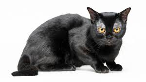

|  |
| Bombay |
BEHAVIOR
Cats in the Asian cat breed group are extremely friendly and affectionate. Bombay cats have unique voices and are usually very vocal. They are not a traditional.
GROOMING
The Bombay cat's short coat does not require excessive grooming but they will enjoy the attention gained from being groomed. As with most shorthair breeds, the cats look after their coat very well. As with all cats, the Bombay cat breed benefit from protection against disease through vaccination and need regular parasite control and annual veterinary health checks.
HEALTH PROBLEMS
Bombay cats are generally long lived and can live well into their late teens. There aren't any known diseases associated specifically with this breed which is only present in the UK in low numbers.
NUTRITION
Every cat is unique and each has their own particular likes, dislikes, and needs when it comes to food. However, cats are carnivores and every cat must obtain 41 different and specific nutrients from their food. The proportion of these nutrients will vary depending on age, lifestyle and overall health, so it's not surprising that a growing, energetic kitten needs a different balance of nutrients in her diet than a less active senior cat. Other considerations to bear in mind are feeding the right quantity of food to maintain 'ideal body condition' in accordance with feeding guidelines and catering to individual preference regarding wet or dry food recipes.